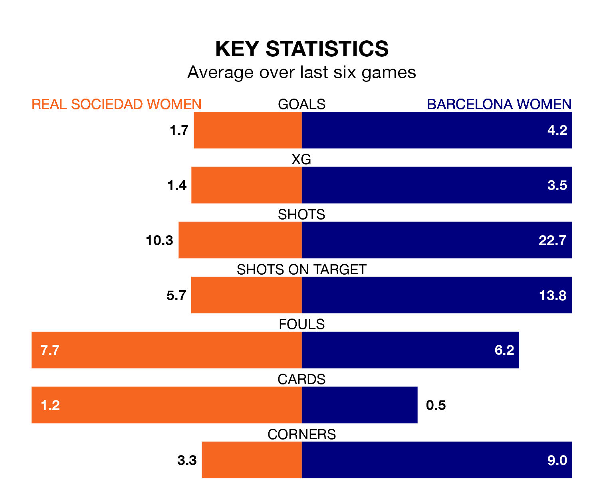

Barcelona Women come to Instalaciones de Zubieta to play Real Sociedad Women on Sunday lunchtime in excellent form, having collected 16 points from their last six games.
The visitors have won five and drawn one of their last six fixtures, while Sociedad Women have two wins and four draws.
With 75 goals in 18 games so far this season, Barcelona are the league's highest scorers with 4.2 goals per game. And they are conceding fewer than average, letting in four goals at a rate of 0.2 per game.
Sociedad Women, meanwhile, are below average scorers, with 1.4 goals per game, compared to a league average of 1.6. They have conceded 1.5 goals per game.
The away team are top of the table after 18 games, of which they have won 17 and drawn one, earning 52 points.
The hosts are six places behind Barcelona in seventh, with seven wins and six draws putting them on 27 points.
In Caroline Graham Hansen, Barcelona have the league's sharpest shooter so far this season. She has notched 14 goals in 16 appearances.
Her goal rate of one every 80 minutes is quicker than that of Synne Jensen, Sociedad Women's top scorer with a goal every 120 minutes, and a total of 11 goals in 18 games.
In the last 10 years, Sociedad Women and Barcelona have played each other on 17 occasions. Barcelona won 16 of them and they drew once.
On average, Sociedad Women scored 0.6 goals and Barcelona 3.5 in those matches.
Their last meeting was on October 8, when Barcelona won 3-0 at home.
Sociedad Women's last match was on February 17, a 1-1 draw against Villarreal Women, with Emma Ramírez Gorgoso getting the goal for Sociedad Women.
Barcelona beat Atletico Madrid Women 2-0 last time out, on February 18, with Salma Paralluelo Ayingono and Victoria López on the scoresheet.
Updated: 09:34 (UTC), 08/03/24